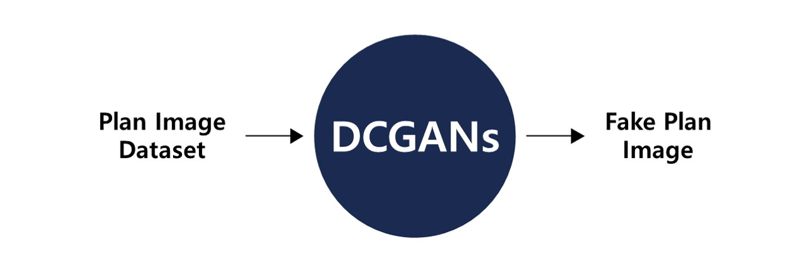
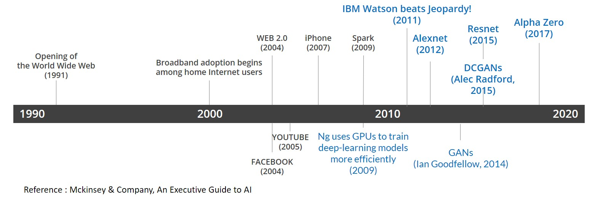
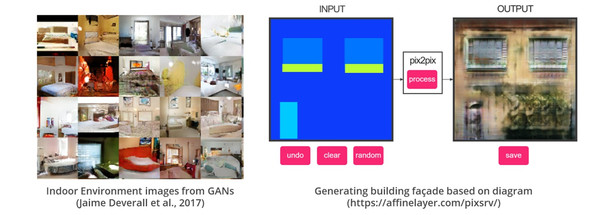
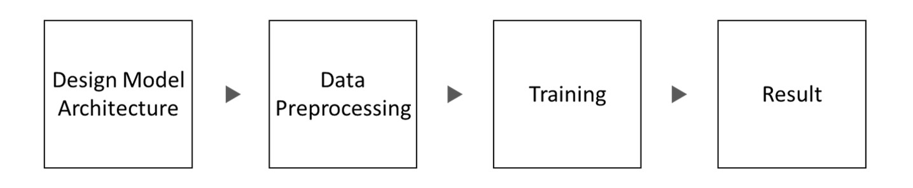
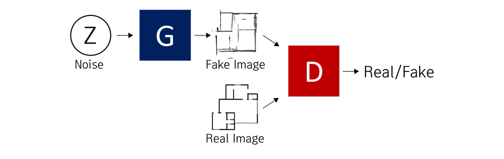
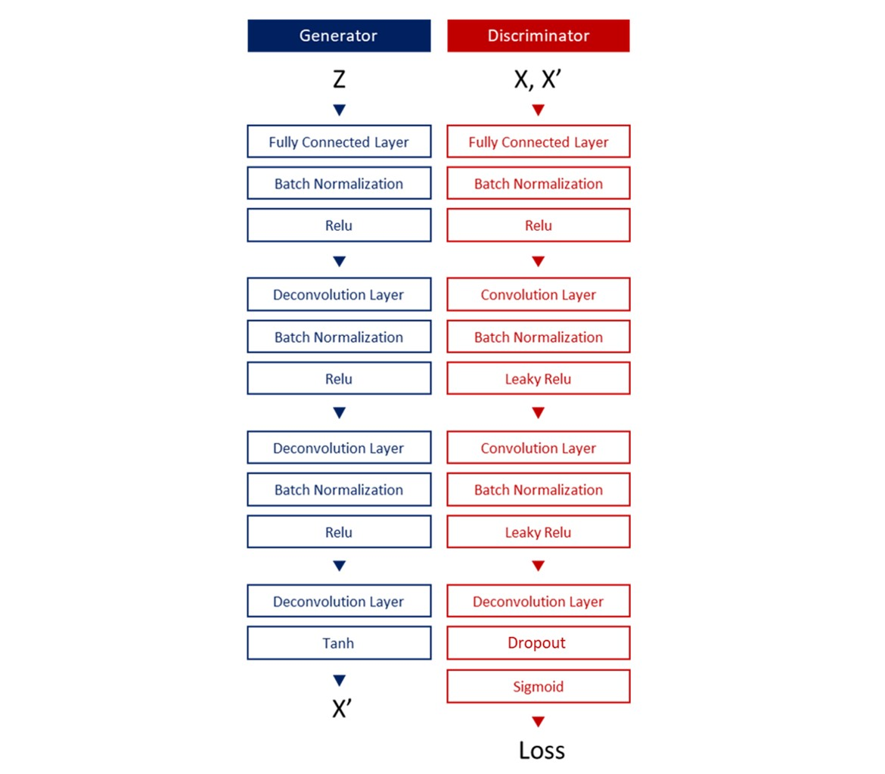
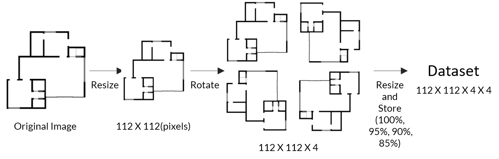
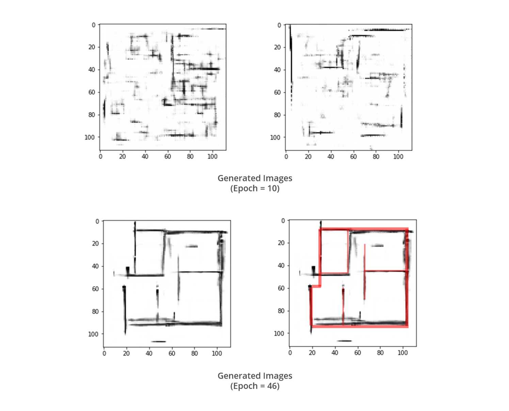
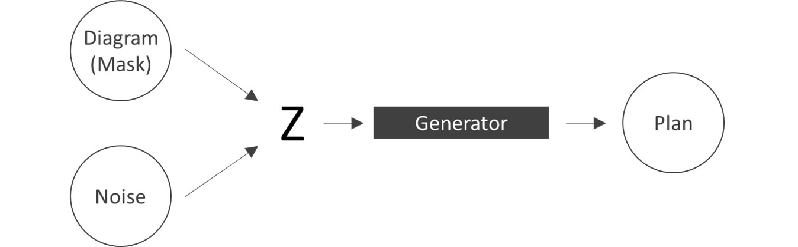

Plan Generator
Plan generating Deep learning model based on DCGANs
Excellent Research Award, 12th International Symposium on Architectural Interchanges in Asia, 2018
Overview
Deep learning(DCGANs) for generating small sized housing plans
As learning progressed, the neural network drew thick lines (which could be thought as walls), and it also drew rectangular spaces like rooms. However, in most of attempts, the neural nets drew only irregularly lines.
Background
After AlexNet, Deep Learning have become mainstream in Computer Vision Field. Deep Learning have been used for not only image classification but also image synthesis and Generation.
Regarding to “Design”, There are several attempts to generate virtual objects (shoes, chairs, clothes, etc.)
Regarding to “Architecture”, There are several attempts to Generating 2D Images of fake Indoor Environment and Generating virtual building elevation base on human’s sketch
Despite of many studies about designing with AI, the use of Deep Learning, especially GANS, in the field of architectural design is rarely progressed
To utilize GAN as a field of Computer Aided Design, it is important to build AI model which generates architectural plan using GAN
- Plan is one of the most basic and important parts in architectural design process
- It is obvious that there are several patterns among the architectural plans which are designed for similar programs and sizes
- Also, we can find several types of patterns like wall, room, unit, etc
Object
Design a deep learning model which generates small sized housing plans
By doing experiment with small dataset, we want to check if there is any possibility of producing realistic drawings with better computing power and larger datasets
Process
Model Architecture
Model architecture is based on DCGANs Structure
- Consist with two adversarial nets, ① Generator(G), ② Discriminator(D)
- Generator creates fake data(X’) from noise(Z)
- Discriminator distinguishes real(X) and fake(X’) data
- The objective of G is deceive D, and D is trained for preventing G doing it
Learning rate of G = 0.001, D = 0.0006
The number of epoch was 200, and batch size was 16. Adam optimizer was used(beta=0.2).
Dropout layer is added after the final fully connected layer (Keep_prob : 0.3)
Data Pre-processing and Augmentation
This study used small housing plans as input dataset. To decrease complexity of input data, we selected plans of one or two bedrooms houses. To solve the memory problem, all data was processed in grayscale. Also, in order to increase the learning effect, we simplified each plan by removing all variables such as furniture, trees, people, and doors.
Because the dataset was too small, we used data augmentation concept in data pre-processing. Every image was rotated by 90, 180, and 270 degrees. In addition to this, we resized every image by 95%,90%, and 85%.
Result
As learning progressed, the neural network began to draw thick lines (which could be thought of as walls), and in several attempts, they also drew several squares like rooms. However, in most of attempts, the neural nets drew only irregularly lines. After 10th epoch, the discriminator loss was usually between 0.9~1.1, and the generator loss was usually between 1.0~3.0. During training procedure, it seems to be there were little of learning effect after 70th epoch.
Problems and Possibility
The main problem in training process was the size of dataset. Architectural plan dataset was consisted with only 128 images even if it has more complex patterns and characteristics than celeb dataset (200,000 images) or the mnist dataset (60,000 images) which were used for test training procedure of this model.
In addition to this, because the drawing method is different for each plan, it is difficult for the neural net to recognize the pattern even if we simplified plans.
To solve this problem, first of all, it is necessary to construct large architectural plan dataset drawn in the same style.
To utilize this model to design process, We suggest advanced model that creates plans by receiving not only noise but also information from a diagram or sketch drawn by an architect.
Reference
- Ian J. Goodfellow, Jean Pouget-Abadie, Mehdi Mirza, Bing Xu, David Warde-Farley, Sherjil Ozair, Aaron Courville, Yoshua Bengio(2014), Generative Adversarial Nets, In Advances in Neural Information Processing Systems, 2672-2680
- Alex Radford, Luke Metz and Soumith Chintala(2015), Unsupervised Representation Learning With Deep Convolutional Generative Adversarial Networks, arXiv:1511.06434
- Evgeny Zamyatin and Andrey Filchenkov(2017), Learning to Generate Chairs with Generative Adversarial Nets, arXiv:1705.10413
- Jaime Deverall, Jiwoo Lee and Miguel Ayala(2017), Using Generative Adversarial Networks to Design Shoes: The Preliminary Steps, http://cs231n.stanford.edu/reports/2017/pdfs/119.pdf
- Yeongjae Lee(2018), A study on the Performance of the Generative Adversarial Networks, Inje University
- Yoon-Hyuk Lee, Dong-Wook Kim and Young-Ho Seo, Hologram Generation Method using DCGAN, 209-210, The Korean Institute of Broadcasting and Media Engineering Summer Conference, 2018.06
- Tim Salimans, Ian Goodfellow, Wojciech Zaremba, Vicki Cheung, Alec Radford, and Xi Chen(2016), Improved Techniques for Training GANs, arXiv:1606.03498
- Mckinsey & Company, ‘An excutive Guide to AI’, https://www.mckinsey.com/business-functions/mckinsey-analytics/our-insights/an-executives-guide-to-ai
- Othman Sbai, Mohamed Elhoseiny, Antoine Bordes, Yann Lecun(2018), Design Inspiration from Generative Networks, arXiv:1804.00921v2